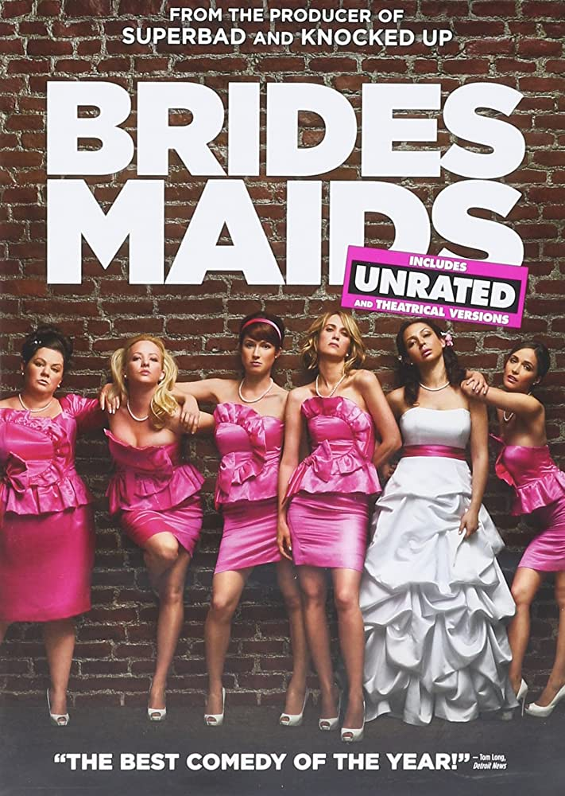

Bridesmaids
"Bridesmaids" is a 2011 American comedy film directed by Paul Feig and produced by Judd Apatow. The movie
follows Annie, a woman whose life is in a downward spiral, as she navigates through the challenges of being
a maid of honor for her best friend's wedding. Through its raunchy humor and relatable characters,
"Bridesmaids" explores themes of friendship, self-discovery, and the ups and downs of modern relationships,
making it a hilarious and heartwarming movie that has become a classic in the comedy genre.